Cách bật lượt theo dõi trên Facebook bằng điện thoại & máy tính

Ty Nguyen
CEO ❤️ AhaChat. Love babies & chatbot.Bạn đang tìm cách bật nút theo dõi trên Facebook cá nhân để tăng lượt follow và giúp bạn bè theo dõi Facebook cá nhân của bạn đơn giản hơn. Bạn đang thắc mắc làm thế nào để hiển thị lượt theo dõi trên tài khoản Facebook? Bài viết dưới đây hướng dẫn bạn cách bật lượt theo dõi trên Facebook bằng máy tính và điện thoại, đừng bỏ lỡ nhé!
1. Kiểm tra trang cá nhân của bạn đã bật theo dõi Facebook hay chưa?
Bật theo dõi Facebook cá nhân chính là việc giúp người dùng khác khi vào tường của bạn sẽ thấy nút Theo dõi nằm ở giữa nút Thêm bạn bè và nút Nhắn tin.
Khi một ai đó click vào nút Thêm bạn bè, kể cả khi bạn chưa chấp nhận bạn bè trên Facebook thì họ vẫn Theo dõi Facebook bạn, bởi khi họ bấm vào nút kết bạn là đồng thời Facebook đã cho phép nick đó Follow bạn. Từ đó, họ vẫn có thể theo dõi và bài post của bạn vẫn được hiển thị trên timeline Facebook. Nhờ vậy mà bài viết của bạn có thể tiếp cận được nhiều tương tác hơn.
Vậy để kiểm tra tài khoản Facebook của bạn đã được bật chế độ theo dõi hay chưa, bạn có thể lấy 1 nick facebook khác vào tường Facebook của bạn xem đã có nút theo dõi hay chưa.
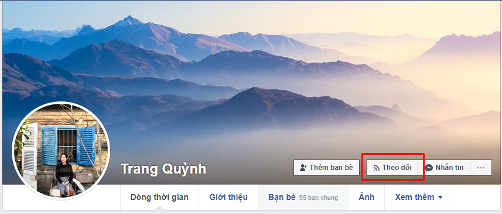
Như trang cá nhân của mình đã hiện nút theo dõi, vậy là tài khoản Facebook cá nhân của mình đã được bật chế độ theo dõi. Vậy cách bật tính năng theo dõi trên tường Facebook cá nhân như thế nào, bạn hãy tiếp tục theo dõi bài viết để có câu trả lời nhé.
2. Cách bật lượt theo dõi trên Facebook
a. Trên máy tính
Để bật lượt theo dõi Facebook trên máy tính, bạn thực hiện theo các bước hướng dẫn sau:
Bước 1: Bạn đăng nhập tài khoản Facebook trên máy tính thông qua trình duyệt web tại địa chỉ facebook.com. Sau khi đăng nhập, xuất hiện giao diện trang chủ, bạn bấm vào biểu tượng hình tam giác ngược ở góc phải trang web facebook và bấm chọn mục Cài đặt.
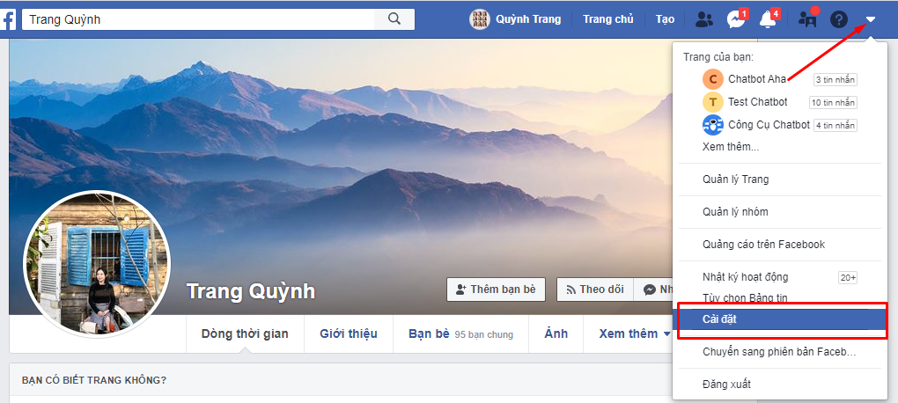
Bước 2: Tại giao diện mục Cài đặt, bạn di chuột đến mục Bài viết công khai ở menu bên trái màn hình bấm chọn. Sau khi bấm chọn Bài viết công khai, bạn nhìn vào bên phải màn hình mục Ai có thể theo dõi tôi, bạn click vào tuỳ chọn và chọn mục Mọi người như hình dưới đây.
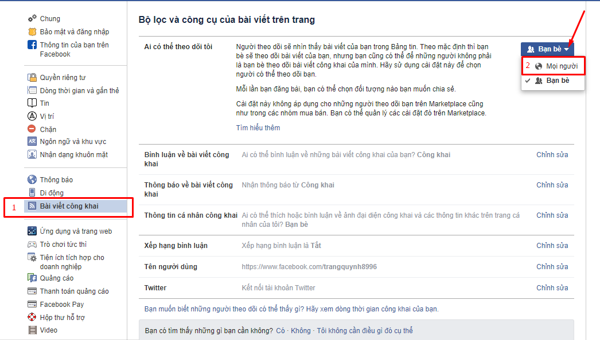
Sau khi bạn chọn Mọi người thì chế độ theo dõi trên Facebook đã được bật thành công trên máy tính, trang cá nhân của bạn đã xuất hiện nút theo dõi khi có bạn bè vào tường bạn xem và kết bạn.
b. Trên điện thoại
Nếu bạn không có máy tính để bật nút theo dõi trên tài khoản Facebook, bạn có thể thực hiện ngay trên chiếc điện thoại của mình. Các thực hiện như sau:
Bước 1: Bạn đăng nhập tài khoản Facebook muốn bật nút theo dõi trên ứng dụng Facebook trên điện thoại của bạn. Sau khi đăng nhập, tại giao diện trang chủ, bạn bấm vào biểu tượng 3 gạch ngang ở góc phải phía dưới màn hình điện thoại, sau đó bấm chọn mục Cài đặt & quyền riêng tư.
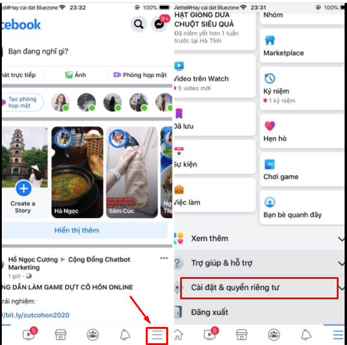
Bước 2: Tiếp theo bạn bấm vào mục Cài đặt.
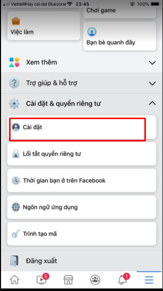
Bước 3: Tại giao diện mục Cài đặt, bạn tìm đến mục Bài viết công khai để bật nút theo dõi trên Facebook.
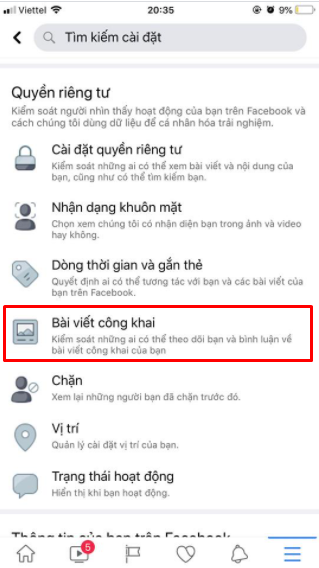
Bước 4: Tiếp theo, ở giao diện mục Bài viết công khai, tại mục Ai có thể theo dõi tôi, bạn tích chọn vào mục Công khai.
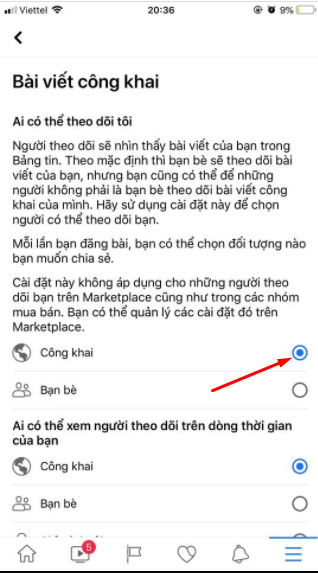
Như vậy là bạn đã bật nút theo dõi Facebook trên điện thoại thành công. Giờ đây, những ai ghé thăm nick Facebook của bạn sẽ thấy nút theo dõi đã được bật thành công.
3. Cách hiển thị lượt theo dõi trên Facebook
Bên cạnh việc bật nút theo dõi trên tài khoản Facebook cá nhân thành công, đôi lúc bạn sẽ muốn hiển thị cả số người theo dõi trên trang cá nhân Facebook của bạn. Cách hiển thị lượt theo dõi Facebook trên máy tính và điện thoại như sau:
a. Trên máy tính
Bước 1: Bạn truy cập vào tài khoản Facebook cá nhân trên máy tính, vào giao diện của trang cá nhân, bạn bấm chọn vào Chỉnh sửa trang cá nhân.
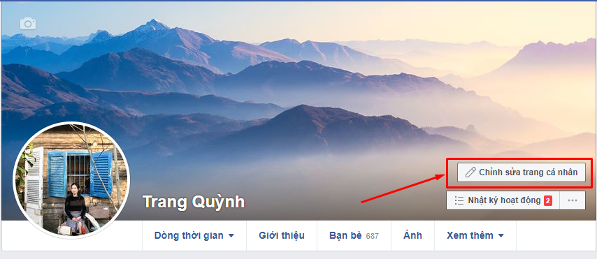
Bước 2: Tiếp theo đó, bạn kéo xuống dưới tìm đến mục Người theo dõi và bạn tích vào ô Có … người theo dõi. Như vậy là bạn đã hoàn tất việc bật số người hiển thị theo dõi Facebook bằng máy tính.
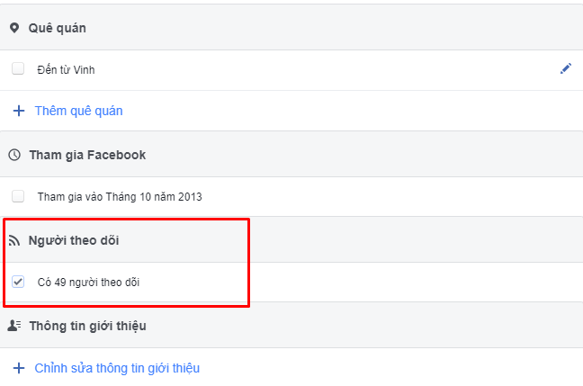
b. Trên điện thoại
Bước 1: Bạn truy cập vào tài khoản Facebook cá nhân trên ứng dụng Facebook bằng điện thoại của bạn. Tại giao diện trang chủ của nick Facebook, bạn bấm vào biểu tượng 3 gạch ngang ở góc phải phía dưới màn hình, sau đó bấm vào mục Xem trang cá nhân của bạn.
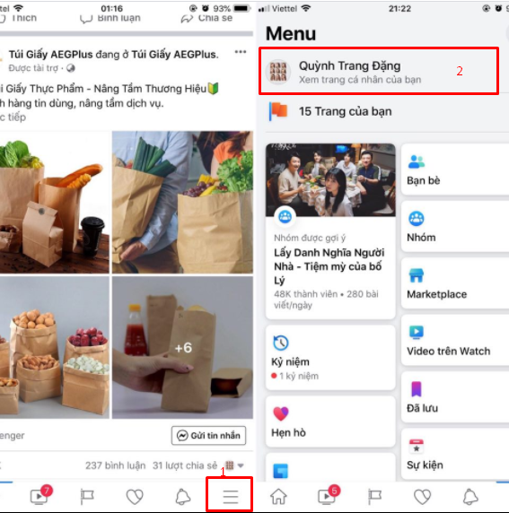
Bước 2: Tại giao diện trang cá nhân của tài khoản facebook, bạn bấm chọn vào mục Chỉnh sửa chi tiết công khai.
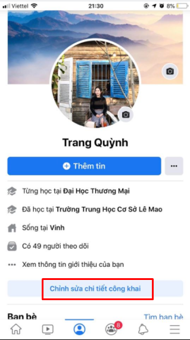
Bước 3: Tiếp theo ở phần Chi tiết ở giao diện Chỉnh sửa trang cá nhân, bạn bấm chọn Chỉnh sửa để hiển thị số người theo dõi trên tài khoản Facebook.
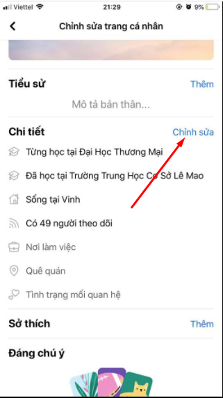
Bước 4: Cuối cùng, bạn tích vào ô Có… người theo dõi, sau đó bấm Lưu.
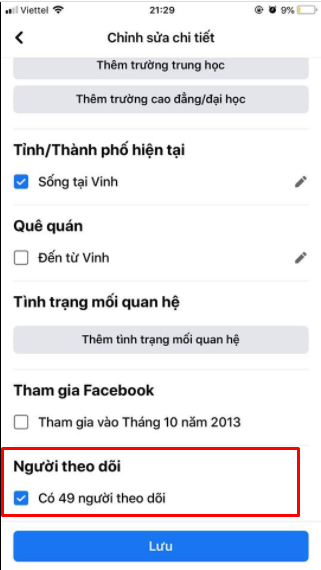
Như vậy, với những thao tác cơ bản bạn đã bật lượt theo dõi trên Facebook bằng điện thoại thành công rồi nhé.
Với bài viết trên đây, chúng tôi đã chia sẻ đến bạn cách bật lượt theo dõi trên Facebook bằng máy tính và điện thoại. Nếu bạn gặp bất cứ khó khăn gì trong quá trình bật nút theo dõi và hiển thị số người theo dõi trên tài khoản Facebook của bạn thì đừng quên để lại bình luận dưới đây để chúng tôi hỗ trợ bạn nhé. Hy vọng bài viết hữu ích đối với bạn, chúc bạn thực hiện thành công!